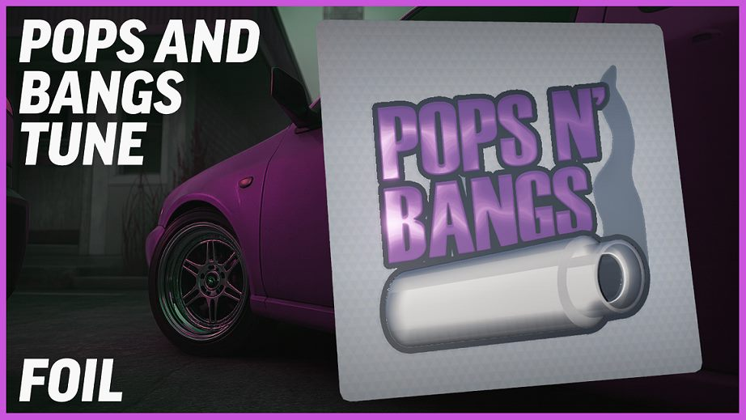
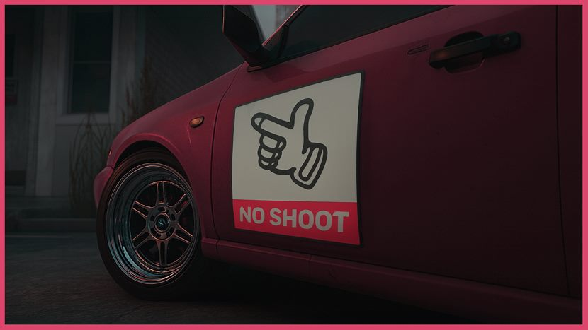
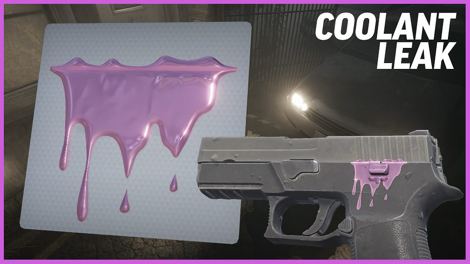
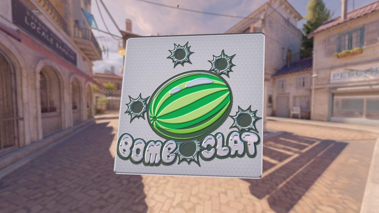
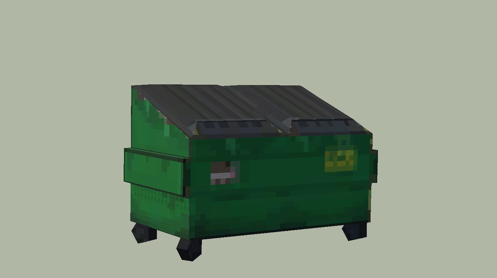
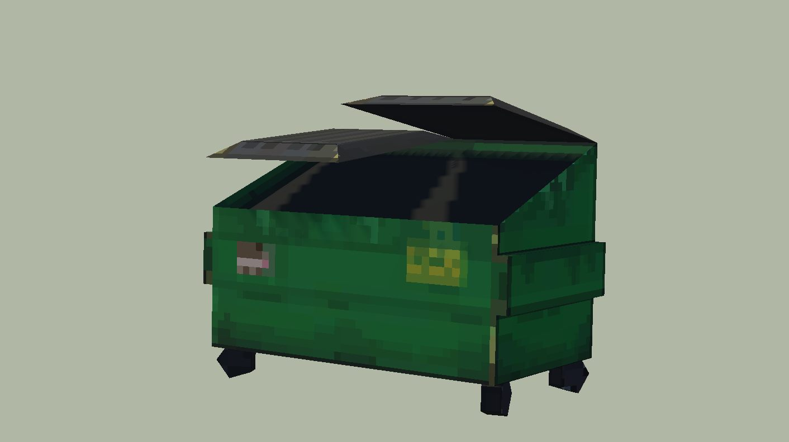
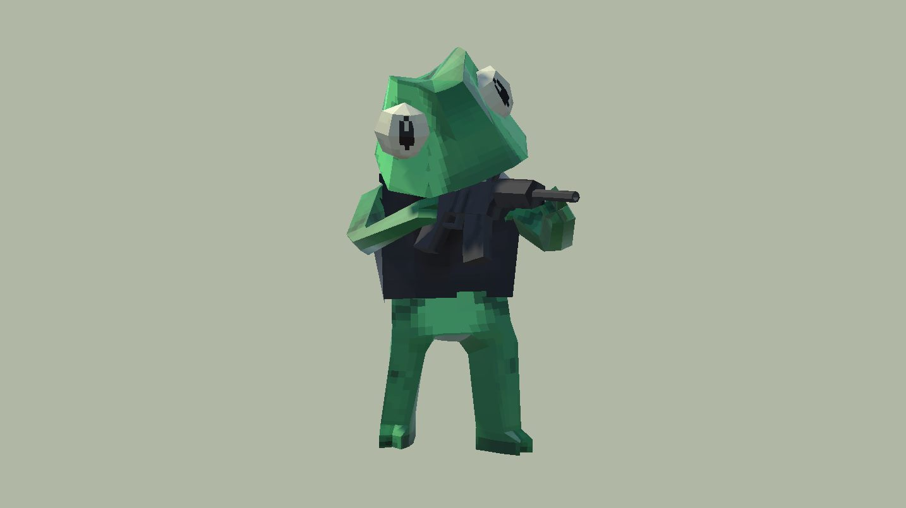
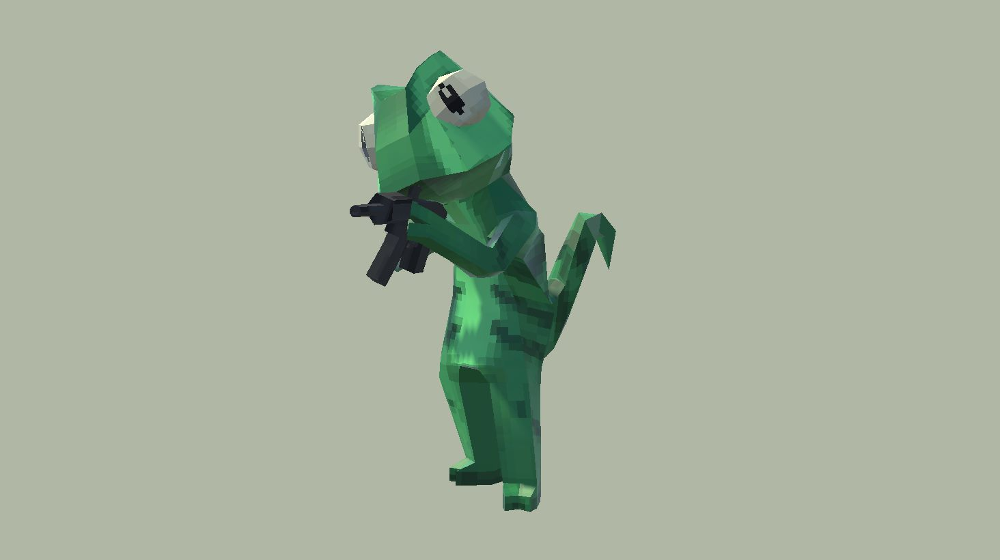

Assety do gier
Modele low-poly i naklejki do Counter-Strike 2. Jako developer nie czekam na grafika: prototypy i assety robię sam.
- Modele
- Blockbench
- Grafika 2D
- Illustrator, Photoshop







